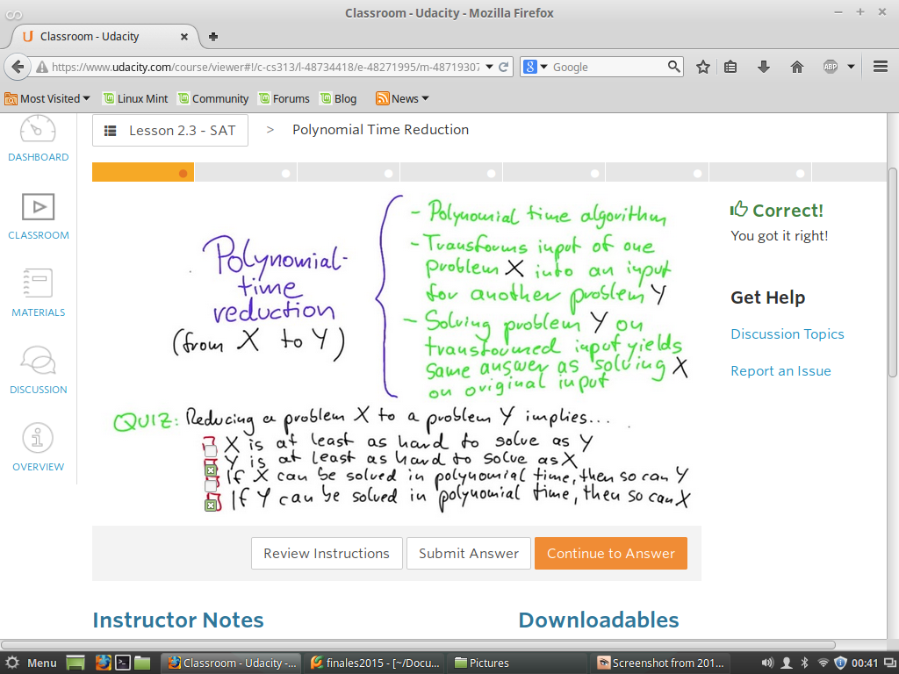
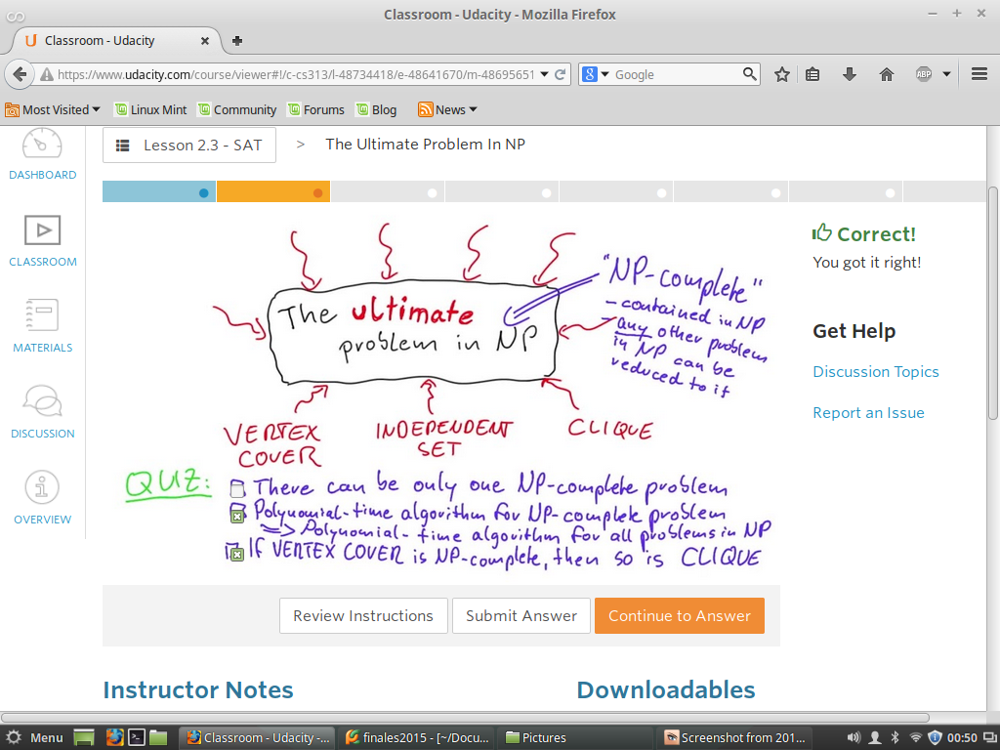
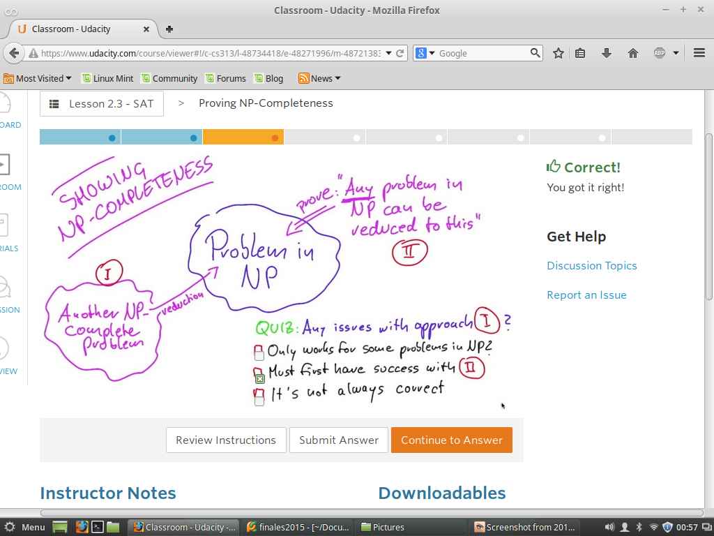
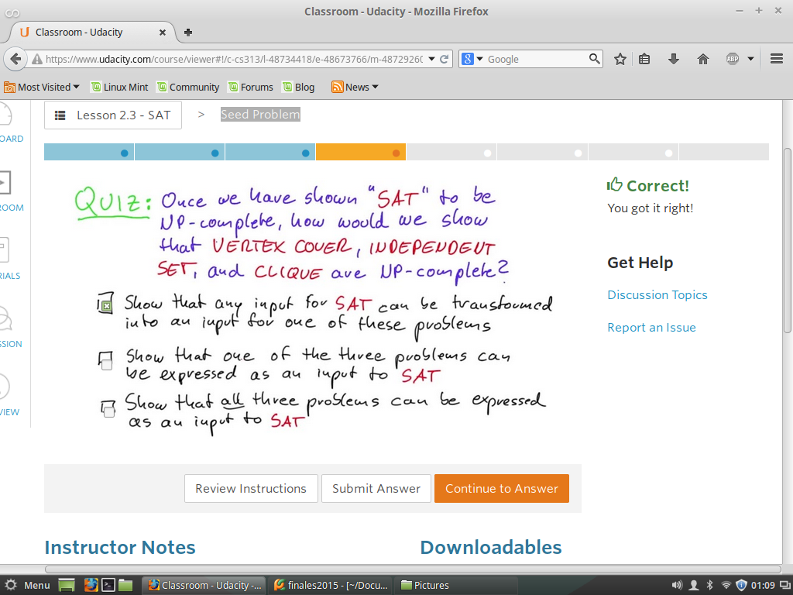
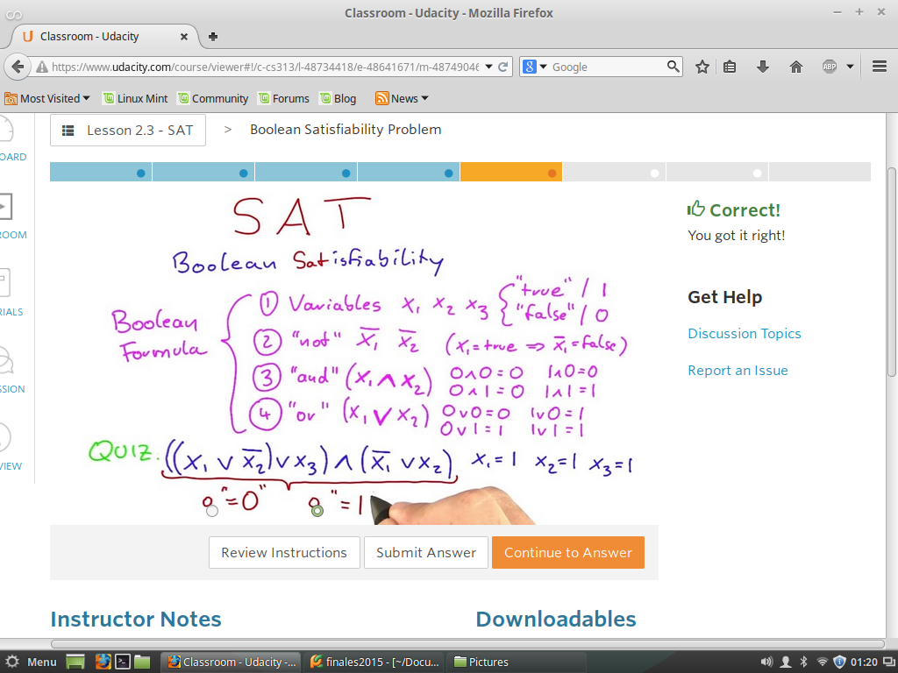
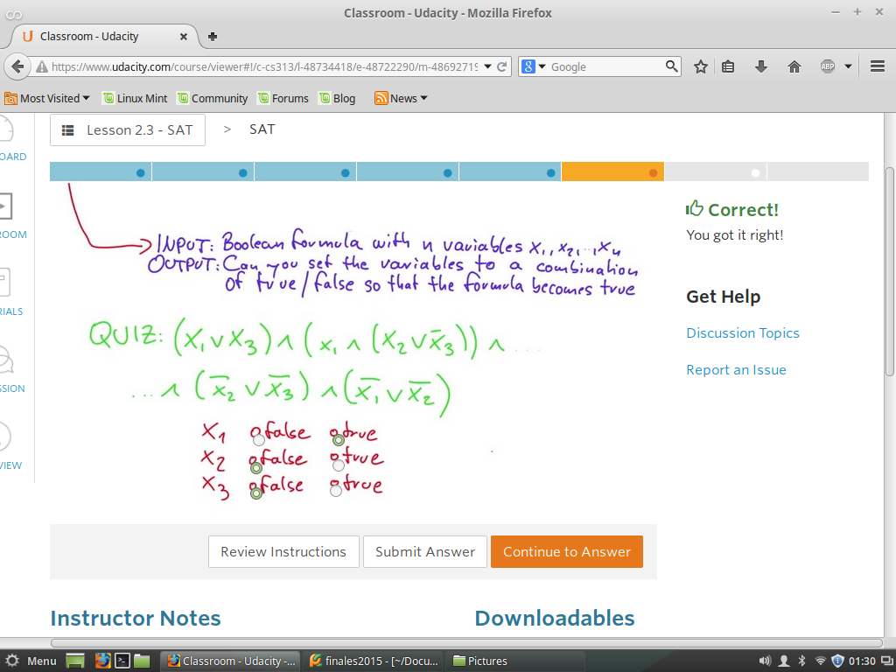
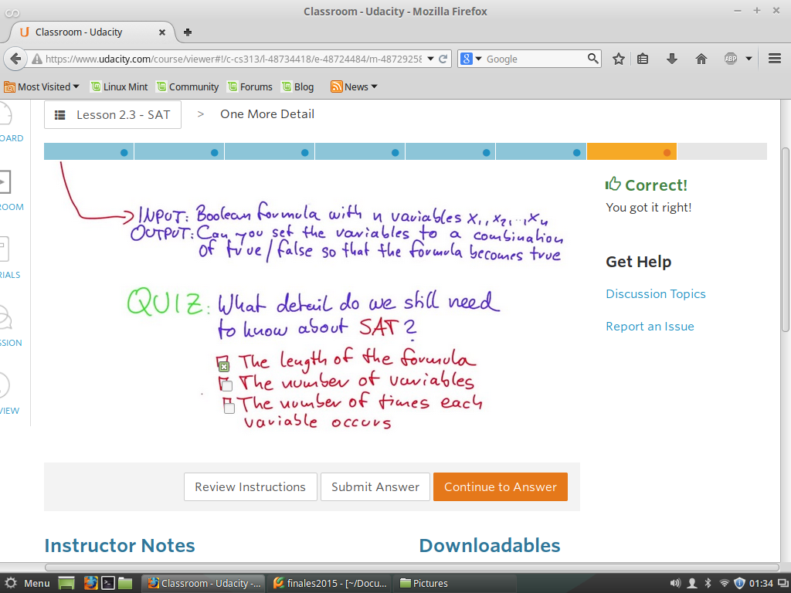

SAT
Desde un problema X a un problema Y
Algunos Problemas de Np puedens er reducidos a Problemas NP
Por Medio de la Satisfacibilidad o SAT
Quiz 1 - Reduccion polinomica
La reduccion de un Problema X a un problema Y inplica que?

RTA: La reduccion de X a Y, significa que si ud tiene una reduccion de X a Y
Entonces significa que e problema X, debe ser capaz de encajar en el Problema Y.
Por lo Tanto el Problema Y debe ser Mayor que x, en finn mas complicado.
Quiz 2 - Ultimo Prblema en NP
Para cualquier Problema NP, Puede resolverse en tiempo Polinomico
Entonces Cualquier otro Problema en NP es tan Dificil o Tan Facil de resolver
A esto se le conoce como NP-Completo.
NP-Completo engloba a todos los problemas NP

Quiz 3 - Problemas en NP
Se pueden reducir otros Problemas NP-Completos a NP
A la vez se puede demostrar Matematicamente

Quiz 4 -El Nucleo de Problemas
Algunos problemas de NP, pueden ser reducidos a este NP
LA pregunta es Como???
Por Medio de la Satisfacibilidad o SAT
para ser NP-Completos

Quiz 5 - SAT
Que es este misterioso Problema SAT
Basicamente nos referimos a formulas Boooleanas, con operadores Logicos.

MINIMO numero de Monitores
Quiz 6 - SAT
Dada una formula Boooleanas, con operadores Logicos.Bebemos determinar los
valores a las variables para obtner Verdadero de toda la expresion.

Quiz 7 - Un detalle mas!
Que otro detalle se debe conocer acerca de SAT...La logitud de la Formula?
